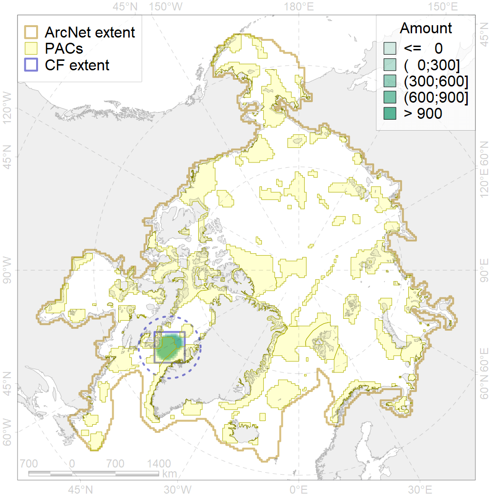
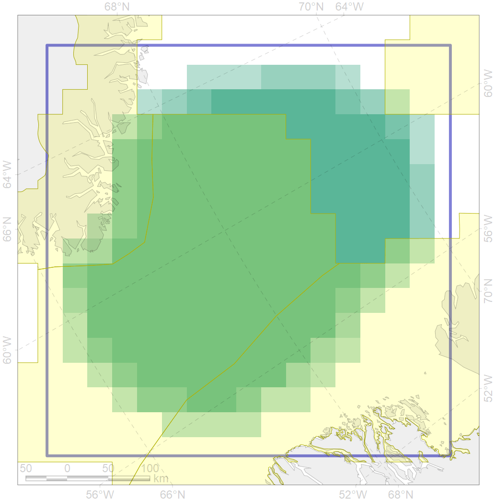

5078

| CF code | 5078 |
| CF name | Narwhal Eclipse Sound stock winter core distribution |
| Time Period | 2003-2007 |
| Source(s) | Dietz et al 2008; Westdal et al 2010 |
| Seasonality | November-April |
| Depth Horizon | 0-1500 |
| Methodology | Satellite tagging |
| Use Restrictions | |
| Author Name | Filatova |
| Notes | |
| Scenario’s Target | 0.72 |
| Target Achievement | 0.742 (Scenario: 103.1%) |
| PAC | Share of the Total Amount within the PAC | Share of the Target Achievement for the ArcNet | PAC’s Contribution to the Target Achievement |
|---|---|---|---|
| 44 | 13.8%20.4% | 18.3%26.1% | 17.7%25.3% |
| 45 | 56.6%63.0% | 75.6%84.0% | 73.3%81.5% |
| 46 | 5.7%9.9% | 7.7%13.5% | 7.5%13.1% |
| 47 | 0.0% | 0.0% | 0.0% |
| inner | 76.1%93.2% | 101.6%123.6% | 98.5%119.9% |
| outer | 23.9%25.9% | 1.5%3.5% | 1.5%3.4% |
| † supplement values are for area consistence whereas principal values are for Accenter compatible gridded stats |